الأصل والتاريخ 中国功夫
الكونغ فو فن قتالي صيني قديم نشأ في معابد شاولين قبل أكثر من 1500 عام. كلمة "كونغ فو" تعني "المهارة المكتسبة بالجهد والوقت"، وتشمل مئات الأساليب المتوارثة التي طوّرها الرهبان والمحاربون الصينيون.
أكاديمية الكونغ فو بمركز شباب الأحمدية تُعلّم الفن القتالي الصيني العريق بأساليبه الخمسة (التنين والأفعى والفهد والكركي والنمر)، من أول حزام أبيض حتى الحزام الأسود، بمنهج تدريبي متدرّج يجمع بين القوة الخارجية والفلسفة الداخلية.
نبذة عن تاريخ اللعبة وفلسفتها وأسلوبها
الكونغ فو فن قتالي صيني قديم نشأ في معابد شاولين قبل أكثر من 1500 عام. كلمة "كونغ فو" تعني "المهارة المكتسبة بالجهد والوقت"، وتشمل مئات الأساليب المتوارثة التي طوّرها الرهبان والمحاربون الصينيون.
الكونغ فو ليس قتالاً بل طريق حياة قائم على الفضيلة القتالية (وو ده): الاحترام والتواضع والصبر والسيطرة على النفس. المدرستان الأساسيتان: شاولين للحركات الخارجية وتقوية العضلات، وو دانج للحركات الداخلية والتركيز والتشي.
من أشهر أساليب الكونغ فو: حركة التنين (الإخافة والهيبة)، حركة الأفعى (التسلل والرد)، حركة الفهد (السرعة غير المباشرة)، حركة الكركي (الانتظار والرد الفوري)، وحركة النمر (الهجوم الخاطف والحماس).
يقوم التدريب على: الأوضاع الأساسية (الحصان والأمامي والقطة والقتال)، اللكمات (المستقيمة والخطافة والصفعة)، الركلات (الخطوة والدهس والجانبية)، الصدات، وسلاسل الحركات (تاولو)، ثم مجموعات الضرب على كيس الملاكمة.
الكونغ فو فنٌّ صيني عريق يربط اللاعب بأربع ركائز: الإتقان الجسدي (الأوضاع والحركات المتسلسلة)، الانضباط الذهني (التأمل والتركيز)، الأخلاق القتالية (وو ده — احترام الخصم والمعلم)، والتدرّج عبر الأحزمة من الأبيض إلى الأسود. الحركات مستوحاة من سلوك الحيوانات الخمسة: التنين والأفعى والفهد والكركي والنمر، وكل حركة تُؤدَّى بروح الحيوان نفسه.
في أكاديميتنا يبدأ المتدرب بـوضع الحصان (ما بو) أساس كل الأوضاع، ثم ينتقل إلى اللكمات والركلات والصدات، فأساليب الحيوانات الخمسة، فسلاسل الحركات المتسلسلة (تاولو). التدريب أسبوعي كل يوم الخميس من 4 إلى 6 مساءً في مركز شباب الأحمدية بإشراف الكابتن خالد رخا.
صور حقيقية من ملفات الأكاديمية توضح الحركات والتدريبات بدل الرسومات المصطنعة
دليل عملي مقسّم إلى أربعة أجزاء: البدء، التمرين الأساسي، الحركات التقليدية، والفلسفة
تجهيز مكان التدريب والأدوات والمصادر قبل أول حصة
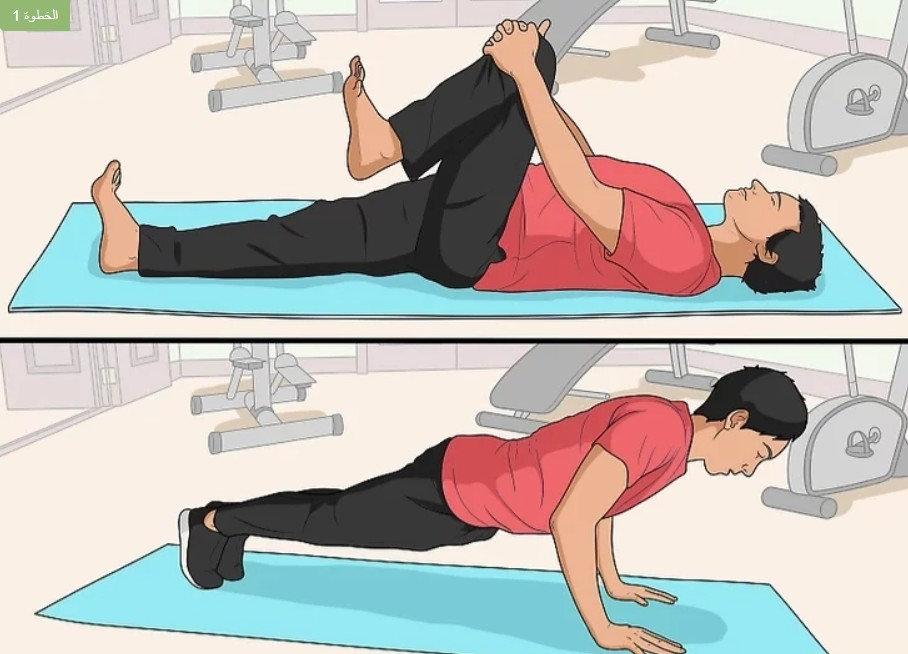
خصص مساحة للتدرّب بحجم 3×3 أمتار على الأقل، وأزل الأغراض القابلة للكسر أو التي قد تسبب الأذى. تحتاج مساحة خالية تسمح لك بتنفيذ الركلات والوقفات الواسعة بحرية وأمان.
🏠 3×3 أمتار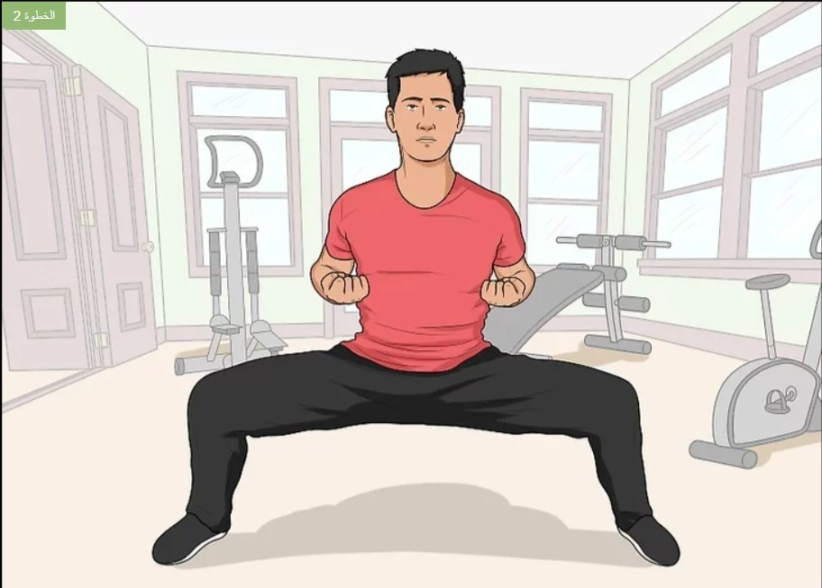
ستحتاجه لاحقاً لتوفير مقاومة حقيقية لحركاتك بعد إتقانها في الفراغ. يمكن تعليقه بالسقف أو شراؤه جاهزاً من متاجر الرياضة، وهو أساس تمرين مجموعات الضرب المتعاقبة.
🥊 مقاومة حقيقية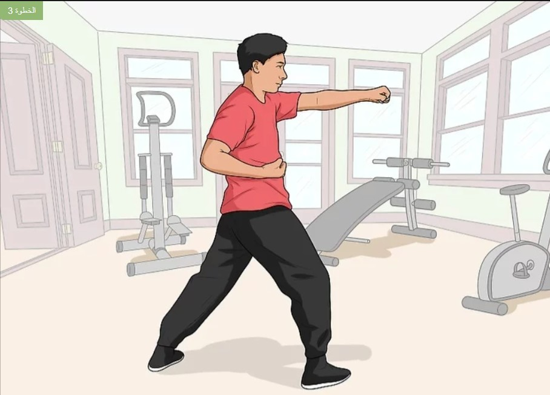
اشترِ أقراصاً تعليمية أو شاهد فيديوهات تدريبية عبر الإنترنت. يُفضَّل الاعتماد على أكثر من مصدر للتحقق من صحة الأداء ومقارنة التفاصيل الفنية لكل حركة.
▶️ أكثر من مصدر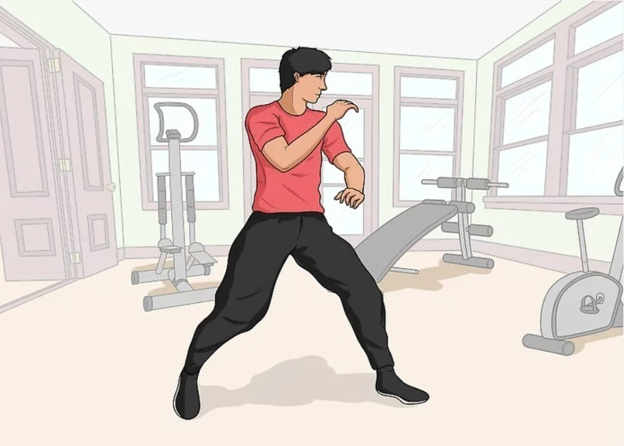
ركّز على جانب واحد أولاً (القفز أو الركل أو اللكم) بعد إتقان الأوضاع، وسيساعدك ذلك على كتابة خطة دروس أسبوعية واضحة التدرّج بلا تشتيت.
📋 خطة أسبوعيةالتوازن والمرونة والأوضاع واللكمات والصدات والركلات
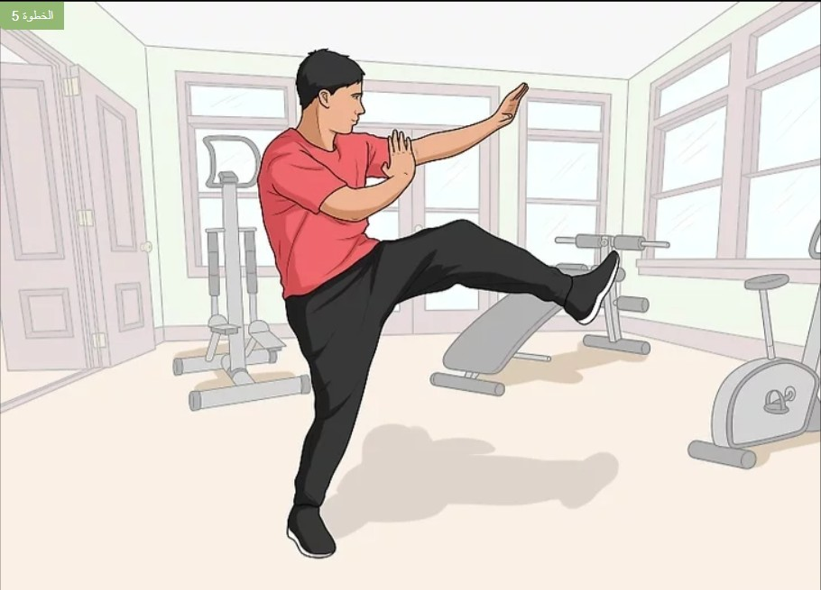
استخدم اليوجا للاتزان، وابدأ كل جلسة بتسخين وبسط للعضلات لتجنب الإصابات وزيادة المرونة. المرونة أساس كل ركلات الكونغ فو العالية والواسعة.
🧘 تسخين وبسط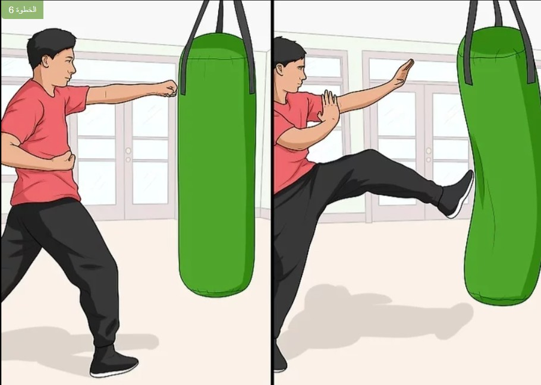
أهم أربع أوضاع: وقفة الحصان (ما بو)، الوضع الأمامي، وضع القطة، ووضع القتال. كل حركة صحيحة تنطلق من وضع سليم؛ لا تنتقل للحركات قبل ثبات أوضاعك.
🐎 4 أوضاع أساسية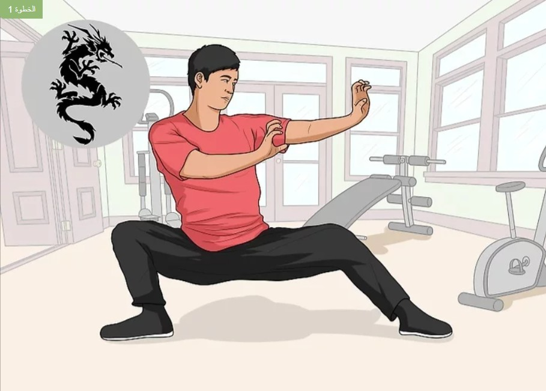
القوة مصدرها الفخذان وليس الذراعين وحدها. أنواع اللكمات: اللكمة المستقيمة، الخطّافة، والصفعة. أخرج النفس بقوة مع كل لكمة وتدرّب عليها من وضع الحصان.
👊 القوة من الفخذين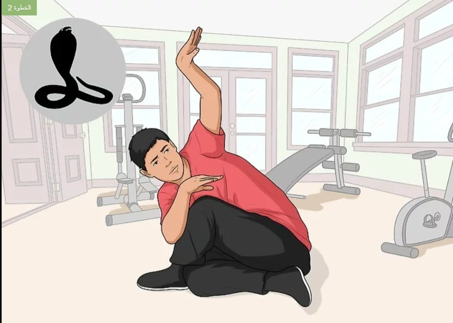
ابدأ بوضع القتال دائماً؛ استخدم الذراع الموجودة في الجانب المهدد للصد، وكلا الذراعين معاً لصد الركلات وضربات المرفق. الصد مهارة تُنقذ قبل أن تُسجّل نقاطاً.
🛡️ صد بذراع واحدة أو اثنتين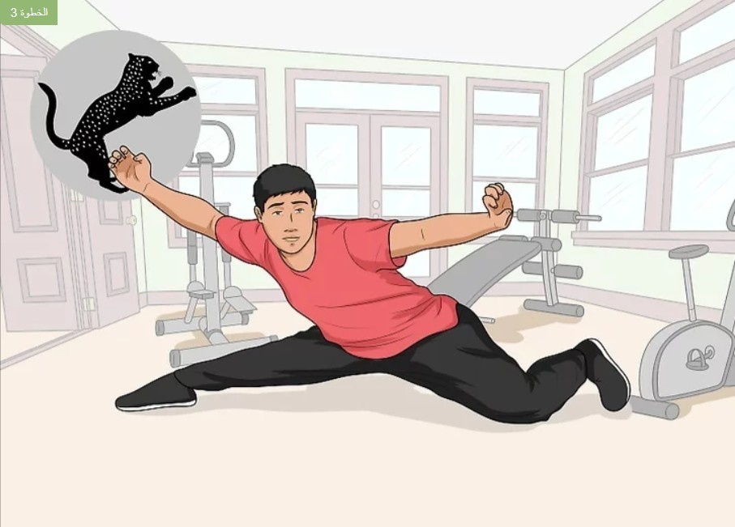
الركلات الأساسية: ركلة الخطوة، ركلة الدهس، والركلة الجانبية. تدرّب عليها أمام كيس الملاكمة مع تثبيت توازن الجسد على الرجل الثابتة في كل مرة.
🦵 3 ركلات أساسية
ابدأ بتنفيذ مجموعات الضرب (سلاسل متعاقبة) في الفراغ حتى تُتقن شكل الحركة، ثم انتقل إلى كيس الملاكمة للمقاومة، ويمكن لاحقاً التمرن مع صديق للرصد والتصحيح.
🔁 فراغ ← كيس ← شريككل حركة تحمل روح الحيوان الذي تُنسب إليه
المدرستان والحيوانات والتأمل والاستمرارية

مدرسة "شاولين" للحركات الخارجية وتقوية العضلات والسرعة، ومدرسة "وو دانج" للحركات الداخلية والتركيز وتنمية الطاقة الداخلية (التشي). المحارب الكامل يجمع بين المدرستين.
☯ شاولين وو دانج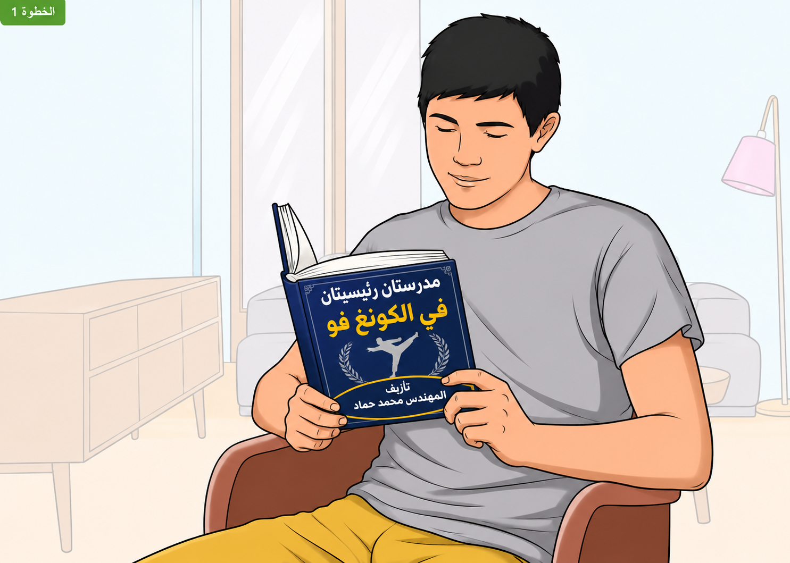
اربط كل حركة باسم الحيوان الخاص بها للدخول في الحالة الذهنية المناسبة واستخدام مصادر قوتك الطبيعية: هيبة التنين وصبر الأفعى وسرعة الفهد واتزان الكركي وبأس النمر.
🐉 روح الحيوان
خمس عشرة دقيقة تأمل يومياً تمنحك الوضوح والسلام الداخلي وسرعة رد الفعل — وهي التي آمن الساموراي بفعاليتها القتالية. صفاء الذهن قبل الحركة هو جوهر الكونغ فو الداخلي.
⏱️ 15 دقيقة يومياً
الطريق الوحيد للاحتراف هو الاستمرارية اليومية مع التصحيح المستمر للأداء ومراجعة مصادر التعلم. الكونغ فو "مهارة مكتسبة بالجهد والوقت" — بالمعنى الحرفي لاسمها.
♾️ استمرارية يوميةعشر درجات من الحزام الأبيض للمبتدئ إلى الحزام الأسود للمتقدم
نظام أحزمة الكونغ فو في الأكاديمية يقسّم رحلة اللاعب إلى عشر درجات متدرّجة، ينتقل فيها اللاعب من مرحلة المبتدئ إلى المتوسط ثم المتقدم حتى يُتوَّج بالحزام الأسود. كل لون حزام له معنى رمزي ومرتبة فنية:
مدرب دولي كونغ فو • بطل جمهورية في الكونغ فو والملاكمة والكيك بوكسينج • خبرة أكثر من 15 سنة لاعباً و12 سنة مدرباً
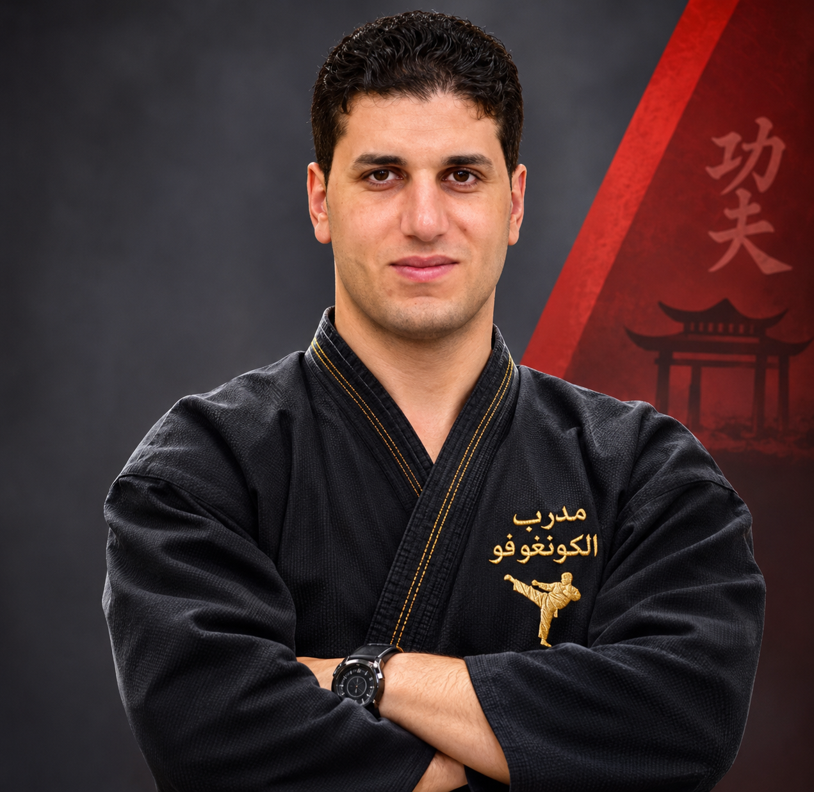
مدرب دولي معتمد في الكونغ فو من الاتحاد المصري للوشو كونغ فو، ومن الاتحاد المصري للملاكمة والكيك بوكسينج، وعضو النقابة العامة للمهن الرياضية. بدأ مسيرته كلاعب لأكثر من 15 سنة توّج خلالها ببطولات الجمهورية في الكونغ فو والملاكمة والكيك بوكسينج وحصل على الحزام الأسود دان 2 لاعبين ومدربين، ثم اتجه للتدريب منذ 12 سنة أعدّ خلالها أبطال جمهورية بجميع المراحل السنية بنين وبنات، ويعمل حالياً مدرباً لمنتخب الدقهلية للبنات (مرحلتا تحت 16 و18 سنة) ومسؤولاً فنياً لأكاديمية الكونغ فو بمركز شباب الأحمدية.
🥇 بطل جمهورية رسمي (كيك بوكسينج)
🥇 بطل جمهورية (ملاكمة)
🥇 بطل جمهورية (كونغ فو)
⚫ الحزام الأسود دان 2 لاعبين — كونغ فو
⚫ الحزام الأسود دان 2 مدربين — كونغ فو
⚫ الحزام الأسود دان 2 — كيك بوكسينج
👧 مدرب منتخب الدقهلية للبنات — تحت 16 و18 سنة
🏟️ مدرب مركز شباب الأحمدية
🥋 مدرب نادي الشال والمنشية
🥋 مدرب نادي الناصرية الرياضي
🐉 مدرب أكاديمية ساندا
🌏 مدرب الأكاديمية الدولية
🥗 دورة تغذية
🚑 دورة إسعافات أولية
🩹 دورة إصابات ملاعب
♿ دورات تأهيل لذوي الاحتياجات الخاصة
🏋️ دورات فتنس ولياقة بدنية
اعتمادات الاتحادات الرسمية وعضوية النقابة والأحزمة السوداء والدورات المتخصصة

أضف صورة الشهادة في assets/images/certs/cert-1.jpg

أضف صورة الشهادة في assets/images/certs/cert-2.jpg

أضف صورة الشهادة في assets/images/certs/cert-3.jpg

أضف صورة الشهادة في assets/images/certs/cert-4.jpg

أضف صورة الشهادة في assets/images/certs/cert-5.jpg

أضف صور الشهادات في assets/images/certs/cert-6.jpg
صور من لاعبي الأكاديمية في مراحل الحزام المختلفة
صور لاعبي الكونغ فو ستظهر هنا
أضف صور اللعبة في مجلد assets/images/photos/ (player-01.jpg، player-02.jpg ...) وسيتم عرضها في هذا المعرض بشكل تلقائي.
ليه تتدرب مع المدرب الدولي الكابتن خالد رخا؟ ونظام المجموعات المرن بالأكاديمية
خرّجت الأكاديمية أبطال جمهورية بجميع المراحل السنية بنين وبنات — منهج تدريبي أثبت نجاحه في البطولات على مستوى الجمهورية.
المشاركة في جميع البطولات الرسمية مع تسجيل الاتحاد للاعبي الأكاديمية — مسار تنافسي حقيقي من أول موسم.
دخول اختبارات الأحزمة الرسمية بانتظام — من الحزام الأصفر حتى الحزام الأسود — بتدرّج موثّق يحمي مجهود اللاعب.
لياقة بدنية ممتازة وقوة تحمل عالية — تدريب بدني متكامل يبني جسد اللاعب مع مهاراته القتالية.
تعلم فنون الدفاع عن النفس والتعامل مع المواقف الواقعية — مهارات عملية تحمي اللاعب في حياته اليومية.
مدرب حاصل على دورات التغذية والإسعافات الأولية وإصابات الملاعب — رعاية صحية وبدنية متخصصة للاعبين.
👥 نظام المجموعات بالأكاديمية
حرصنا على أن يجد كل لاعب مكانه المناسب: تقسيم المجموعات حسب المراحل العمرية لضمان أقصى استفادة لكل لاعب وتركيز تدريبي مناسب لمستواه، ومجموعة خاصة للبنات فقط لبيئة تدريبية مريحة للأسر، إضافة إلى مجموعة بريفت (خاصة) بمواعيد مرنة حسب ظروف العمل والدراسة.
مواعيد حصص التدريب في أكاديمية الكونغ فو بمركز شباب الأحمدية
⏰ الساعة: من 4 مساءً إلى 6 مساءً — حصتان متصلتان
📍 المكان: مركز شباب الأحمدية
🥋 المدرب: الكابتن / خالد رخا — مدرب دولي
الحصة الأسبوعية الأساسية للأكاديمية كل يوم الخميس من 4 إلى 6 مساءً — المقر الأساسي لتدريبات الكونغ فو وإعداد اللاعبين لبطولات الجمهورية.
مقر تدريب إضافي في شارع الجسر — جوار فلا راجح، منزل إبراهيم خميس، خلف المعهد الأزهري — للمجموعات والمواعيد الخاصة (بنات / بريفت) حسب ظروف العمل والدراسة.
تواصل مع إدارة الأكاديمية للتسجيل أو الاستفسار عن مواعيد التدريب
أكاديمية الكونغ فو بإشراف المدرب الدولي الكابتن خالد رخا تستقبل الناشئين والشباب من جميع الأعمار (من 5 سنوات). التدريب كل يوم الخميس من 4 إلى 6 مساءً في مركز شباب الأحمدية، مع مقر إضافي في الأكاديمية بشارع الجسر (جوار فلا راجح — منزل إبراهيم خميس — خلف المعهد الأزهري). متاح مجموعة خاصة للبنات فقط ومجموعات بريفت حسب ظروف العمل والدراسة — للتسجيل أو الاستفسار تواصل مباشرة مع المدرب.